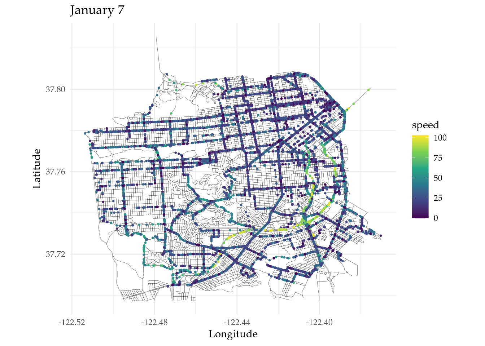
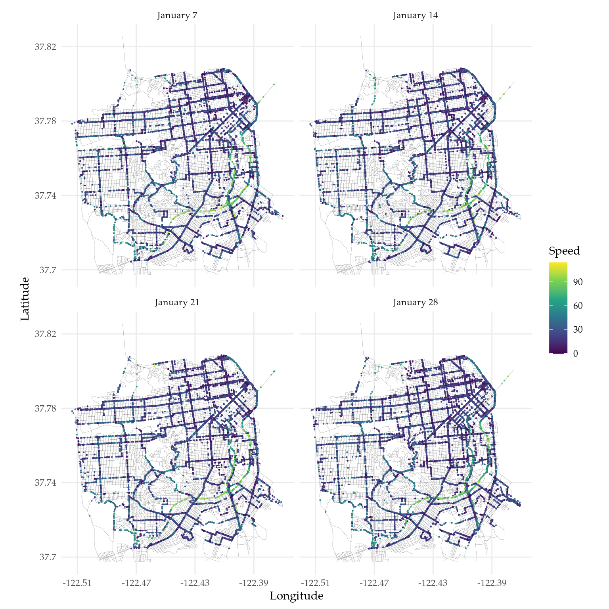

Go back to the About page. This link might be useful to keep track of the files created during the preprocessing.
Let us set some global options for all code chunks in this document.
knitr::opts_chunk$set(
message = FALSE, # Disable messages printed by R code chunks
warning = FALSE, # Disable warnings printed by R code chunks
echo = TRUE, # Show R code within code chunks in output
include = TRUE, # Include both R code and its results in output
eval = TRUE, # Evaluate R code chunks
cache = FALSE, # Enable caching of R code chunks for faster rendering
fig.align = "center",
out.width = "100%",
retina = 2,
error = TRUE,
collapse = FALSE
)
rm(list = ls())
set.seed(1982)# Install R-INLA package
# install.packages("INLA",repos = c(getOption("repos"),INLA ="https://inla.r-inla-download.org/R/testing"), dep = TRUE)
# Update R-INLA package
# inla.upgrade(testing = TRUE)
# Install inlabru package
# remotes::install_github("inlabru-org/inlabru", ref = "devel")
# Install rSPDE package
# remotes::install_github("davidbolin/rspde", ref = "devel")
# Install MetricGraph package
# remotes::install_github("davidbolin/metricgraph", ref = "devel")
library(INLA)
library(inlabru)
library(rSPDE)
library(MetricGraph)
library(dplyr)
library(plotly)
library(scales)
library(patchwork)
library(tidyr)
library(ggplot2)
library(sf)
library(here)
library(rmarkdown)
library(knitr)
library(grateful) # Cite all loaded packages
rm(list = ls()) # Clear the workspace
set.seed(1982) # Set seed for reproducibilityWe load before_modeling.RData,
which was created in pp6.html.
# Load the data
load(here("data_files/before_modeling.RData"))
# List the objects in the workspace
data_in_before_modeling <- ls()
print(data_in_before_modeling)## [1] "data" "mesh" "points" "sf_graph"## [1] 56011 7## [1] 60054 1## [1] 56011 4## A metric graph object with:
##
## Vertices:
## Total: 21754
## Degree 1: 16; Degree 2: 6971; Degree 3: 766; Degree 4: 7831; Degree 5: 532;
## Degree 6: 3328; Degree 7: 146; Degree 8: 2151; Degree 9: 2; Degree 10: 10;
## Degree 12: 1;
## With incompatible directions: 1
##
## Edges:
## Total: 44284
## Lengths:
## Min: 0.002834658 ; Max: 1.480513 ; Total: 2965.023
## Weights:
## Columns: Length FRC SpeedLimit StreetName harmonicAverageSpeed medianSpeed averageSpeed sampleSize averageTravelTime medianTravelTime travelTimeRatio List_Number 5percentile 10percentile 15percentile 20percentile 25percentile 30percentile 35percentile 40percentile 45percentile 50percentile 55percentile 60percentile 65percentile 70percentile 75percentile 80percentile 85percentile 90percentile 95percentile road_type class_6 class_5 class_4 class_0 class_3 class_1 upto1 upto3 upto4 upto5 upto6 density density_per_hour
## That are circles: 0
##
## Graph units:
## Vertices unit: degrees ; Lengths unit: km
##
## Longitude and Latitude coordinates: TRUE
## Which spatial package: sf
## CRS: EPSG:4326
##
## Some characteristics of the graph:
## Connected: TRUE
## Has loops: FALSE
## Has multiple edges: TRUE
## Is a tree: FALSE
## Distance consistent: FALSE
## Has Euclidean edges: FALSE
##
## Computed quantities inside the graph:
## Laplacian: FALSE ; Geodesic distances: TRUE
## Resistance distances: FALSE ; Finite element matrices: FALSE
##
## Mesh:
## Max h_e: 0.04999869 ; Min n_e: 0
##
## Data:
## Columns: speed SpeedLimit
## Groups: .group
##
## Tolerances:
## vertex-vertex: 0.001
## vertex-edge: 0.001
## edge-edge: 0sf_graph$plot(vertex_size = 0, data = "speed", edge_width = 0.05, group = 1, data_size = 0.5) +
ggtitle("January 7") +
theme_minimal() +
theme(legend.position = "right", text = element_text(family = "Palatino"))
Press the Show button below to reveal the code.
# This code chunk only serves the purpose of plotting the four replicates
data_to_plot <- sf_graph$get_data()
load(here("data_files/tomtom.RData"))
load(here("data_files/day7142128hour13noconsecutivezeroes.RData"))
polygon = st_multipoint(c(st_point(c(-122.53000, 37.69702)),
st_point(c(-122.37000, 37.69702)),
st_point(c(-122.37000, 37.82600)),
st_point(c(-122.53000, 37.82600)))) %>%
st_cast("POLYGON") %>%
st_sfc(crs = st_crs(df))
from.tomtom <- tomtom %>%
dplyr::select(-Id, -Segment.Id, -NewSegId, -timeSet, -dateRange, -standardDeviationSpeed, -travelTimeStandardDeviation) %>%
filter(FRC != "7") %>%
mutate(value = SpeedLimit, road_type = paste("class_", FRC, sep = ""), aux = paste("class_", FRC, sep = "")) %>%
pivot_wider(names_from = aux, values_from = value, values_fill = list(value = 0)) %>%
mutate(upto1 = class_0 + class_1) %>%
mutate(upto3 = upto1 + class_3) %>%
mutate(upto4 = upto3 + class_4) %>%
mutate(upto5 = upto4 + class_5) %>%
mutate(upto6 = upto5 + class_6) %>%
mutate(Length = Length/1000) %>%
mutate(density = sampleSize/Length) %>%
mutate(density_per_hour = density/24) %>%
st_transform(crs = st_crs(df)) %>%
st_filter(x = ., y = polygon, .predicate = st_within)
newpolygon = st_multipoint(c(st_point(c(-122.53000, 37.69702)),
st_point(c(-122.45600, 37.69702)),
st_point(c(-122.44850, 37.70230)),
st_point(c(-122.43000, 37.69702)),
st_point(c(-122.37000, 37.69702)),
st_point(c(-122.37000, 37.80600)),
st_point(c(-122.39000, 37.82600)),
st_point(c(-122.53000, 37.82600)))) %>%
st_cast("POLYGON") %>%
st_sfc(crs = st_crs(df))
from.tomtom <- from.tomtom %>% st_filter(x = ., y = newpolygon, .predicate = st_within)
coords <- st_coordinates(from.tomtom)
min_x <- min(coords[, "X"]) |> round(2)
max_x <- max(coords[, "X"]) |> round(2)
min_y <- min(coords[, "Y"]) |> round(2)
max_y <- max(coords[, "Y"]) |> round(2)
# Define labels for each group
group_labels <- c("January 7", "January 14", "January 21", "January 28")
# Create a base plot with road network
base_plot <- ggplot() +
geom_sf(data = from.tomtom, aes(color = "Highways"), color = "black", linewidth = 0.02) +
scale_x_continuous(labels = function(x) paste0(x), name = "Longitude", breaks = seq(min_x, max_x, by = 0.04)) +
scale_y_continuous(labels = function(y) paste0(y), name = "Latitude", breaks = seq(min_y, max_y, by = 0.04)) +
theme_minimal()
# Create individual plots for each group and overlay data points
group_plots <- lapply(unique(data_to_plot$.group), function(gr) {
geom_point(data = subset(data_to_plot, .group == gr), aes(x = .coord_x, y = .coord_y, color = speed), size = 0.1)
})
# Combine the base plot and the group plots
combined_plot <- base_plot +
facet_wrap(~ .group, ncol = 2, labeller = labeller(.group = function(variable, value) {
return(group_labels[value])
})) + # Specify custom labels for facet_wrap
group_plots +
scale_color_gradient(name = "Speed") +
labs(color = "Speed") +
scale_color_viridis_c(option = "D") +
theme(text = element_text(family = "Palatino"))
# Print the combined plot
print(combined_plot)
rspde_model_stat <- rspde.metric_graph(sf_graph,
parameterization = "matern",
nu = 0.5)
data_rspde_bru_stat <- graph_data_rspde(rspde_model_stat,
repl = ".all",
loc_name = "loc")
cmp_stat <- speed ~ -1 +
Intercept(1) +
SpeedLimit +
field(loc, model = rspde_model_stat,
replicate = data_rspde_bru_stat[["repl"]])
rspde_fit_stat <-
bru(cmp_stat,
data = data_rspde_bru_stat[["data"]],
family = "gaussian",
options = list(verbose = FALSE)
)
summary(rspde_fit_stat)
fit.rspde <- rspde.result(rspde_fit_stat, "field", rspde_model_stat)
summary(fit.rspde)
rspde_fit_statnu0.5 <- rspde_fit_statinlabru version: 2.10.1.9010
INLA version: 24.06.19
Components:
Intercept: main = linear(1), group = exchangeable(1L), replicate = iid(1L)
SpeedLimit: main = linear(SpeedLimit), group = exchangeable(1L), replicate = iid(1L)
field: main = cgeneric(loc), group = exchangeable(1L), replicate = iid(data_rspde_bru_stat[["repl"]])
Likelihoods:
Family: 'gaussian'
Data class: 'metric_graph_data', 'list'
Predictor: speed ~ .
Time used:
Pre = 1.18, Running = 712, Post = 26.4, Total = 739
Fixed effects:
mean sd 0.025quant 0.5quant 0.975quant mode kld
Intercept 24.362 0.281 23.812 24.362 24.916 24.362 0
SpeedLimit 3.623 0.112 3.404 3.623 3.841 3.623 0
Random effects:
Name Model
field CGeneric
Model hyperparameters:
mean sd 0.025quant 0.5quant
Precision for the Gaussian observations 0.012 0.000 0.012 0.012
Theta1 for field 3.342 0.027 3.291 3.342
Theta2 for field -0.230 0.063 -0.352 -0.231
0.975quant mode
Precision for the Gaussian observations 0.012 0.012
Theta1 for field 3.396 3.341
Theta2 for field -0.105 -0.234
Deviance Information Criterion (DIC) ...............: 420972.66
Deviance Information Criterion (DIC, saturated) ....: 69651.97
Effective number of parameters .....................: 13688.58
Watanabe-Akaike information criterion (WAIC) ...: 421684.79
Effective number of parameters .................: 11742.44
Marginal log-Likelihood: -217021.45
is computed
Posterior summaries for the linear predictor and the fitted values are computed
(Posterior marginals needs also 'control.compute=list(return.marginals.predictor=TRUE)')
mean sd 0.025quant 0.5quant 0.975quant mode
std.dev 28.294800 0.7497110 26.871500 28.276200 29.815300 28.227200
range 0.795732 0.0497475 0.703982 0.793571 0.899263 0.788327B.sigma = cbind(0, 1, 0, mesh$SpeedLimit, 0)
B.range = cbind(0, 0, 1, 0, mesh$SpeedLimit)
init.vec.theta = c(fit.rspde$summary.log.std.dev$mode,
fit.rspde$summary.log.range$mode,
rep(0, (ncol(B.sigma)-3)))
rspde_model_nonstat <- rspde.metric_graph(sf_graph,
start.theta = init.vec.theta,
theta.prior.mean = init.vec.theta,
B.sigma = B.sigma,
B.range = B.range,
parameterization = "matern",
nu = 0.5)
data_rspde_bru_nonstat <- graph_data_rspde(rspde_model_nonstat,
repl = ".all",
loc_name = "loc")
cmp_nonstat <- speed ~ -1 +
Intercept(1) +
SpeedLimit +
field(loc, model = rspde_model_nonstat,
replicate = data_rspde_bru_nonstat[["repl"]])
rspde_fit_nonstat <-
bru(cmp_nonstat,
data = data_rspde_bru_nonstat[["data"]],
family = "gaussian",
options = list(verbose = FALSE)
)
summary(rspde_fit_nonstat)
summary(rspde.result(rspde_fit_nonstat, "field", rspde_model_nonstat))
rspde_fit_nonstatnu0.5 <- rspde_fit_nonstatinlabru version: 2.10.1.9010
INLA version: 24.06.19
Components:
Intercept: main = linear(1), group = exchangeable(1L), replicate = iid(1L)
SpeedLimit: main = linear(SpeedLimit), group = exchangeable(1L), replicate = iid(1L)
field: main = cgeneric(loc), group = exchangeable(1L), replicate = iid(data_rspde_bru_nonstat[["repl"]])
Likelihoods:
Family: 'gaussian'
Data class: 'metric_graph_data', 'list'
Predictor: speed ~ .
Time used:
Pre = 1.12, Running = 493, Post = 22.6, Total = 517
Fixed effects:
mean sd 0.025quant 0.5quant 0.975quant mode kld
Intercept 24.355 0.280 23.808 24.355 24.905 24.355 0
SpeedLimit 3.630 0.108 3.417 3.630 3.842 3.630 0
Random effects:
Name Model
field CGeneric
Model hyperparameters:
mean sd 0.025quant 0.5quant
Precision for the Gaussian observations 0.012 0.000 0.012 0.012
Theta1 for field 3.361 0.025 3.313 3.360
Theta2 for field -0.191 0.060 -0.302 -0.193
Theta3 for field 0.087 0.031 0.023 0.088
Theta4 for field 0.196 0.062 0.069 0.197
0.975quant mode
Precision for the Gaussian observations 0.012 0.012
Theta1 for field 3.413 3.357
Theta2 for field -0.066 -0.203
Theta3 for field 0.144 0.092
Theta4 for field 0.311 0.206
Deviance Information Criterion (DIC) ...............: 420961.94
Deviance Information Criterion (DIC, saturated) ....: 69665.62
Effective number of parameters .....................: 13702.13
Watanabe-Akaike information criterion (WAIC) ...: 421669.40
Effective number of parameters .................: 11749.81
Marginal log-Likelihood: -217028.86
is computed
Posterior summaries for the linear predictor and the fitted values are computed
(Posterior marginals needs also 'control.compute=list(return.marginals.predictor=TRUE)')
mean sd 0.025quant 0.5quant 0.975quant mode
Theta1.matern 3.3607600 0.0253418 3.3132400 3.3600000 3.4129200 3.3565500
Theta2.matern -0.1909790 0.0600332 -0.3024400 -0.1931010 -0.0664567 -0.2029110
Theta3.matern 0.0866002 0.0307684 0.0232740 0.0875326 0.1442740 0.0917472
Theta4.matern 0.1955290 0.0615616 0.0687321 0.1974260 0.3108150 0.2060140rspde_model_stat <- rspde.metric_graph(sf_graph,
parameterization = "matern",
nu = 1.5)
data_rspde_bru_stat <- graph_data_rspde(rspde_model_stat,
repl = ".all",
loc_name = "loc")
cmp_stat <- speed ~ -1 +
Intercept(1) +
SpeedLimit +
field(loc, model = rspde_model_stat,
replicate = data_rspde_bru_stat[["repl"]])
rspde_fit_stat <-
bru(cmp_stat,
data = data_rspde_bru_stat[["data"]],
family = "gaussian",
options = list(verbose = FALSE)
)
summary(rspde_fit_stat)
fit.rspde <- rspde.result(rspde_fit_stat, "field", rspde_model_stat)
summary(fit.rspde)
rspde_fit_statnu1.5 <- rspde_fit_statinlabru version: 2.10.1.9010
INLA version: 24.06.19
Components:
Intercept: main = linear(1), group = exchangeable(1L), replicate = iid(1L)
SpeedLimit: main = linear(SpeedLimit), group = exchangeable(1L), replicate = iid(1L)
field: main = cgeneric(loc), group = exchangeable(1L), replicate = iid(data_rspde_bru_stat[["repl"]])
Likelihoods:
Family: 'gaussian'
Data class: 'metric_graph_data', 'list'
Predictor: speed ~ .
Time used:
Pre = 0.857, Running = 526, Post = 20.1, Total = 547
Fixed effects:
mean sd 0.025quant 0.5quant 0.975quant mode kld
Intercept 24.13 0.143 23.850 24.13 24.412 24.13 0
SpeedLimit 5.00 0.110 4.786 5.00 5.214 5.00 0
Random effects:
Name Model
field CGeneric
Model hyperparameters:
mean sd 0.025quant 0.5quant
Precision for the Gaussian observations 0.012 0.000 0.011 0.012
Theta1 for field 2.906 0.013 2.880 2.907
Theta2 for field -1.721 0.029 -1.778 -1.721
0.975quant mode
Precision for the Gaussian observations 0.012 0.012
Theta1 for field 2.932 2.907
Theta2 for field -1.666 -1.719
Deviance Information Criterion (DIC) ...............: 422398.73
Deviance Information Criterion (DIC, saturated) ....: 69671.40
Effective number of parameters .....................: 13710.17
Watanabe-Akaike information criterion (WAIC) ...: 423088.25
Effective number of parameters .................: 11697.74
Marginal log-Likelihood: -217769.40
is computed
Posterior summaries for the linear predictor and the fitted values are computed
(Posterior marginals needs also 'control.compute=list(return.marginals.predictor=TRUE)')
mean sd 0.025quant 0.5quant 0.975quant mode
std.dev 18.293100 0.23782500 17.824200 18.294300 18.758100 18.299800
range 0.178948 0.00507203 0.168991 0.178946 0.188952 0.179034B.sigma = cbind(0, 1, 0, mesh$SpeedLimit, 0)
B.range = cbind(0, 0, 1, 0, mesh$SpeedLimit)
init.vec.theta = c(fit.rspde$summary.log.std.dev$mode,
fit.rspde$summary.log.range$mode,
rep(0, (ncol(B.sigma)-3)))
rspde_model_nonstat <- rspde.metric_graph(sf_graph,
start.theta = init.vec.theta,
theta.prior.mean = init.vec.theta,
B.sigma = B.sigma,
B.range = B.range,
parameterization = "matern",
nu = 1.5)
data_rspde_bru_nonstat <- graph_data_rspde(rspde_model_nonstat,
repl = ".all",
loc_name = "loc")
cmp_nonstat <- speed ~ -1 +
Intercept(1) +
SpeedLimit +
field(loc, model = rspde_model_nonstat,
replicate = data_rspde_bru_nonstat[["repl"]])
rspde_fit_nonstat <-
bru(cmp_nonstat,
data = data_rspde_bru_nonstat[["data"]],
family = "gaussian",
options = list(verbose = FALSE)
)
summary(rspde_fit_nonstat)
summary(rspde.result(rspde_fit_nonstat, "field", rspde_model_nonstat))
rspde_fit_nonstatnu1.5 <- rspde_fit_nonstatinlabru version: 2.10.1.9010
INLA version: 24.06.19
Components:
Intercept: main = linear(1), group = exchangeable(1L), replicate = iid(1L)
SpeedLimit: main = linear(SpeedLimit), group = exchangeable(1L), replicate = iid(1L)
field: main = cgeneric(loc), group = exchangeable(1L), replicate = iid(data_rspde_bru_nonstat[["repl"]])
Likelihoods:
Family: 'gaussian'
Data class: 'metric_graph_data', 'list'
Predictor: speed ~ .
Time used:
Pre = 1.02, Running = 693, Post = 22.5, Total = 716
Fixed effects:
mean sd 0.025quant 0.5quant 0.975quant mode kld
Intercept 24.125 0.143 23.843 24.124 24.406 24.124 0
SpeedLimit 5.010 0.109 4.796 5.010 5.222 5.010 0
Random effects:
Name Model
field CGeneric
Model hyperparameters:
mean sd 0.025quant 0.5quant
Precision for the Gaussian observations 0.012 0.000 0.011 0.012
Theta1 for field 2.906 0.013 2.881 2.906
Theta2 for field -1.724 0.027 -1.777 -1.725
Theta3 for field 0.011 0.016 -0.021 0.011
Theta4 for field 0.026 0.016 -0.006 0.026
0.975quant mode
Precision for the Gaussian observations 0.012 0.012
Theta1 for field 2.931 2.905
Theta2 for field -1.670 -1.726
Theta3 for field 0.042 0.012
Theta4 for field 0.056 0.026
Deviance Information Criterion (DIC) ...............: 422376.18
Deviance Information Criterion (DIC, saturated) ....: 69712.35
Effective number of parameters .....................: 13750.10
Watanabe-Akaike information criterion (WAIC) ...: 423046.43
Effective number of parameters .................: 11717.29
Marginal log-Likelihood: -217777.56
is computed
Posterior summaries for the linear predictor and the fitted values are computed
(Posterior marginals needs also 'control.compute=list(return.marginals.predictor=TRUE)')
mean sd 0.025quant 0.5quant 0.975quant mode
Theta1.matern 2.9057300 0.0125565 2.88126000 2.9056400 2.9306900 2.9052800
Theta2.matern -1.7244400 0.0273559 -1.77745000 -1.7247300 -1.6697400 -1.7259400
Theta3.matern 0.0110203 0.0159982 -0.02091600 0.0111701 0.0420734 0.0118034
Theta4.matern 0.0255082 0.0158143 -0.00603783 0.0256485 0.0562279 0.0262408rspde_model_stat <- rspde.metric_graph(sf_graph,
parameterization = "matern",
nu.upper.bound = 1.5)
data_rspde_bru_stat <- graph_data_rspde(rspde_model_stat,
repl = ".all",
loc_name = "loc")
cmp_stat <- speed ~ -1 +
Intercept(1) +
SpeedLimit +
field(loc, model = rspde_model_stat,
replicate = data_rspde_bru_stat[["repl"]])
rspde_fit_stat <-
bru(cmp_stat,
data = data_rspde_bru_stat[["data"]],
family = "gaussian",
options = list(verbose = FALSE)
)
summary(rspde_fit_stat)
fit.rspde <- rspde.result(rspde_fit_stat, "field", rspde_model_stat)
summary(fit.rspde)
rspde_fit_statnuest <- rspde_fit_statinlabru version: 2.10.1.9010
INLA version: 24.06.19
Components:
Intercept: main = linear(1), group = exchangeable(1L), replicate = iid(1L)
SpeedLimit: main = linear(SpeedLimit), group = exchangeable(1L), replicate = iid(1L)
field: main = cgeneric(loc), group = exchangeable(1L), replicate = iid(data_rspde_bru_stat[["repl"]])
Likelihoods:
Family: 'gaussian'
Data class: 'metric_graph_data', 'list'
Predictor: speed ~ .
Time used:
Pre = 1.18, Running = 5419, Post = 119, Total = 5540
Fixed effects:
mean sd 0.025quant 0.5quant 0.975quant mode kld
Intercept 25.296 1.692 21.978 25.296 28.616 25.296 0
SpeedLimit 3.718 0.104 3.513 3.718 3.923 3.718 0
Random effects:
Name Model
field CGeneric
Model hyperparameters:
mean sd 0.025quant 0.5quant
Precision for the Gaussian observations 0.013 0.000 0.012 0.013
Theta1 for field 4.648 0.094 4.512 4.635
Theta2 for field 1.635 0.226 1.108 1.667
Theta3 for field -3.216 0.399 -4.149 -3.159
0.975quant mode
Precision for the Gaussian observations 0.013 0.013
Theta1 for field 4.868 4.567
Theta2 for field 1.961 1.828
Theta3 for field -2.647 -2.866
Deviance Information Criterion (DIC) ...............: 419504.24
Deviance Information Criterion (DIC, saturated) ....: 71125.83
Effective number of parameters .....................: 15156.02
Watanabe-Akaike information criterion (WAIC) ...: 420152.89
Effective number of parameters .................: 12782.18
Marginal log-Likelihood: -216673.25
is computed
Posterior summaries for the linear predictor and the fitted values are computed
(Posterior marginals needs also 'control.compute=list(return.marginals.predictor=TRUE)')
mean sd 0.025quant 0.5quant 0.975quant mode
std.dev 104.7500000 10.2302000 91.1098000 102.647000 129.697000 95.7957000
range 5.2646200 1.0943000 3.0495600 5.337550 7.105320 5.6435900
nu 0.0618325 0.0207657 0.0235789 0.061922 0.099379 0.0604903B.sigma = cbind(0, 1, 0, mesh$SpeedLimit, 0)
B.range = cbind(0, 0, 1, 0, mesh$SpeedLimit)
init.vec.theta = c(fit.rspde$summary.log.std.dev$mode,
fit.rspde$summary.log.range$mode,
rep(0, (ncol(B.sigma)-3)))
rspde_model_nonstat <- rspde.metric_graph(sf_graph,
start.theta = init.vec.theta,
theta.prior.mean = init.vec.theta,
B.sigma = B.sigma,
B.range = B.range,
parameterization = "matern",
nu.upper.bound = 1.5)
data_rspde_bru_nonstat <- graph_data_rspde(rspde_model_nonstat,
repl = ".all",
loc_name = "loc")
cmp_nonstat <- speed ~ -1 +
Intercept(1) +
SpeedLimit +
field(loc, model = rspde_model_nonstat,
replicate = data_rspde_bru_nonstat[["repl"]])
rspde_fit_nonstat <-
bru(cmp_nonstat,
data = data_rspde_bru_nonstat[["data"]],
family = "gaussian",
options = list(verbose = FALSE)
)
summary(rspde_fit_nonstat)
summary(rspde.result(rspde_fit_nonstat, "field", rspde_model_nonstat))
rspde_fit_nonstatnuest <- rspde_fit_nonstatinlabru version: 2.10.1.9010
INLA version: 24.06.19
Components:
Intercept: main = linear(1), group = exchangeable(1L), replicate = iid(1L)
SpeedLimit: main = linear(SpeedLimit), group = exchangeable(1L), replicate = iid(1L)
field: main = cgeneric(loc), group = exchangeable(1L), replicate = iid(data_rspde_bru_nonstat[["repl"]])
Likelihoods:
Family: 'gaussian'
Data class: 'metric_graph_data', 'list'
Predictor: speed ~ .
Time used:
Pre = 1.45, Running = 71785, Post = 86.2, Total = 71872
Fixed effects:
mean sd 0.025quant 0.5quant 0.975quant mode kld
Intercept 23.908 2.044 19.982 23.878 27.998 23.875 0
SpeedLimit 3.735 0.103 3.533 3.735 3.938 3.735 0
Random effects:
Name Model
field CGeneric
Model hyperparameters:
mean sd 0.025quant 0.5quant
Precision for the Gaussian observations 0.013 0.000 0.012 0.013
Theta1 for field 4.079 0.011 4.054 4.080
Theta2 for field 2.164 0.012 2.140 2.165
Theta3 for field 0.096 0.007 0.081 0.096
Theta4 for field 0.224 0.005 0.214 0.224
Theta5 for field -1.089 0.019 -1.133 -1.086
0.975quant mode
Precision for the Gaussian observations 0.013 0.013
Theta1 for field 4.097 4.085
Theta2 for field 2.185 2.168
Theta3 for field 0.110 0.096
Theta4 for field 0.232 0.224
Theta5 for field -1.064 -1.070
Deviance Information Criterion (DIC) ...............: 419479.21
Deviance Information Criterion (DIC, saturated) ....: 71139.38
Effective number of parameters .....................: 15190.94
Watanabe-Akaike information criterion (WAIC) ...: 420137.34
Effective number of parameters .................: 12811.92
Marginal log-Likelihood: -216696.66
is computed
Posterior summaries for the linear predictor and the fitted values are computed
(Posterior marginals needs also 'control.compute=list(return.marginals.predictor=TRUE)')
mean sd 0.025quant 0.5quant 0.975quant mode
Theta1.matern 4.0788300 0.01090570 4.0544300 4.0797700 4.096690 4.0848900
Theta2.matern 2.1641600 0.01155710 2.1396700 2.1647200 2.184990 2.1675000
Theta3.matern 0.0957875 0.00725435 0.0813102 0.0958491 0.109899 0.0961221
Theta4.matern 0.2237060 0.00456106 0.2143200 0.2237950 0.232354 0.2243240
nu 0.3778020 0.00525714 0.3654280 0.3787570 0.384910 0.3833140# Load the groups
load(here("data_files/GROUPS.RData"))
distance = seq(from = 0, to = 200, by = 20)/1000
mse.statnu0.5 <- mse.nonstatnu0.5 <- ls.statnu0.5 <- ls.nonstatnu0.5 <- rep(0,length(distance))
mse.statnu1.5 <- mse.nonstatnu1.5 <- ls.statnu1.5 <- ls.nonstatnu1.5 <- rep(0,length(distance))
mse.statnuest <- mse.nonstatnuest <- ls.statnuest <- ls.nonstatnuest <- rep(0,length(distance))
# cross-validation for-loop
for (j in 1:length(distance)) {
print(j)
# cross-validation of the stationary model
cv.statnu0.5 <- inla.group.cv(rspde_fit_statnu0.5, groups = GROUPS[[j]])
cv.statnu1.5 <- inla.group.cv(rspde_fit_statnu1.5, groups = GROUPS[[j]])
cv.statnuest <- inla.group.cv(rspde_fit_statnuest, groups = GROUPS[[j]])
# cross-validation of the nonstationary model
cv.nonstatnu0.5 <- inla.group.cv(rspde_fit_nonstatnu0.5, groups = GROUPS[[j]])
cv.nonstatnu1.5 <- inla.group.cv(rspde_fit_nonstatnu1.5, groups = GROUPS[[j]])
cv.nonstatnuest <- inla.group.cv(rspde_fit_nonstatnuest, groups = GROUPS[[j]])
# obtain MSE and LS
mse.statnu0.5[j] <- mean((cv.statnu0.5$mean - points$speed)^2)
mse.statnu1.5[j] <- mean((cv.statnu1.5$mean - points$speed)^2)
mse.statnuest[j] <- mean((cv.statnuest$mean - points$speed)^2)
mse.nonstatnu0.5[j] <- mean((cv.nonstatnu0.5$mean - points$speed)^2)
mse.nonstatnu1.5[j] <- mean((cv.nonstatnu1.5$mean - points$speed)^2)
mse.nonstatnuest[j] <- mean((cv.nonstatnuest$mean - points$speed)^2)
ls.statnu0.5[j] <- mean(log(cv.statnu0.5$cv))
ls.statnu1.5[j] <- mean(log(cv.statnu1.5$cv))
ls.statnuest[j] <- mean(log(cv.statnuest$cv))
ls.nonstatnu0.5[j] <- mean(log(cv.nonstatnu0.5$cv))
ls.nonstatnu1.5[j] <- mean(log(cv.nonstatnu1.5$cv))
ls.nonstatnuest[j] <- mean(log(cv.nonstatnuest$cv))
}
# Create data frames
mse_df <- data.frame(
distance,
Statnu0.5 = mse.statnu0.5,
Nonstatnu0.5 = mse.nonstatnu0.5,
Statnu1.5 = mse.statnu1.5,
Nonstatnu1.5 = mse.nonstatnu1.5,
Statnuest = mse.statnuest,
Nonstatnuest = mse.nonstatnuest
)
ls_df <- data.frame(
distance,
Statnu0.5 = -ls.statnu0.5,
Nonstatnu0.5 = -ls.nonstatnu0.5,
Statnu1.5 = -ls.statnu1.5,
Nonstatnu1.5 = -ls.nonstatnu1.5,
Statnuest = -ls.statnuest,
Nonstatnuest = -ls.nonstatnuest
)
save(mse_df, ls_df, file = here("data_files/crossvalidation.RData"))# Load the data
load(here("data_files/crossvalidation.RData"))
distance = seq(from = 0, to = 200, by = 20)/1000
# Convert to long format
mse_long <- mse_df %>%
pivot_longer(cols = -distance, names_to = "nu", values_to = "MSE")
ls_long <- ls_df %>%
pivot_longer(cols = -distance, names_to = "nu", values_to = "LogScore")
# Update the label mappings with the new legend title
label_mapping <- c(
"Statnu0.5" = "0.5",
"Nonstatnu0.5" = "0.5",
"Statnu1.5" = "1.5",
"Nonstatnu1.5" = "1.5",
"Statnuest" = "est",
"Nonstatnuest" = "est"
)
# Define color and linetype mapping
color_mapping <- c(
"Statnu0.5" = "blue",
"Nonstatnu0.5" = "red",
"Statnu1.5" = "black",
"Nonstatnu1.5" = "green",
"Statnuest" = "darkorange",
"Nonstatnuest" = "skyblue"
)
linetype_mapping <- c(
"Statnu0.5" = "dotdash",
"Nonstatnu0.5" = "solid",
"Statnu1.5" = "dotdash",
"Nonstatnu1.5" = "solid",
"Statnuest" = "dotdash",
"Nonstatnuest" = "solid"
)
# Plot MSE
mse_plot <- ggplot(mse_long, aes(x = distance, y = MSE, color = nu, linetype = nu)) +
geom_line(size = 1) +
labs(y = "MSE", x = "Distance in km") +
scale_color_manual(values = color_mapping, labels = label_mapping, name = expression(nu)) +
scale_linetype_manual(values = linetype_mapping, labels = label_mapping, name = expression(nu)) +
theme_minimal() +
theme(text = element_text(family = "Palatino"))
# Plot negative log-score
ls_plot <- ggplot(ls_long, aes(x = distance, y = LogScore, color = nu, linetype = nu)) +
geom_line(size = 1) +
labs(y = "Negative Log-Score", x = "Distance in km") +
scale_color_manual(values = color_mapping, labels = label_mapping, name = expression(nu)) +
scale_linetype_manual(values = linetype_mapping, labels = label_mapping, name = expression(nu)) +
theme_minimal() +
theme(text = element_text(family = "Palatino"))
# Combine plots with a shared legend at the top in a single line
combined_plot <- mse_plot + ls_plot +
plot_layout(guides = 'collect') &
theme(legend.position = 'right') &
guides(color = guide_legend(ncol = 1), linetype = guide_legend(nrow = 1))
# Display combined plot
print(combined_plot)MSE and negative Log-Score as functions of distance (in km) for the stationary (dotdash line, \(\boldsymbol{\cdot-\cdot}\)) and non-stationary (solid line, \(\boldsymbol{-\!\!\!-\!\!\!-}\)) cases with \(\nu = 0.5\), \(\nu = 1.5\), and \(\nu\) estimated (est).
We used R version 4.4.0 (R Core Team 2024) and the following R packages: ggtext v. 0.1.2 (Wilke and Wiernik 2022), gridExtra v. 2.3 (Auguie 2017), here v. 1.0.1 (Müller 2020), htmltools v. 0.5.8.1 (Cheng et al. 2024), INLA v. 24.6.27 (Rue, Martino, and Chopin 2009; Lindgren, Rue, and Lindström 2011; Martins et al. 2013; Lindgren and Rue 2015; De Coninck et al. 2016; Rue et al. 2017; Verbosio et al. 2017; Bakka et al. 2018; Kourounis, Fuchs, and Schenk 2018), inlabru v. 2.11.1.9001 (Yuan et al. 2017; Bachl et al. 2019), knitr v. 1.47 (Xie 2014, 2015, 2024), latex2exp v. 0.9.6 (Meschiari 2022), listviewer v. 4.0.0 (de Jong, Gainer, and Russell 2023), mapview v. 2.11.2 (Appelhans et al. 2023), Matrix v. 1.6.5 (Bates, Maechler, and Jagan 2024), MetricGraph v. 1.3.0.9000 (Bolin, Simas, and Wallin 2023b, 2023a, 2023c, 2024; Bolin et al. 2023), patchwork v. 1.2.0 (Pedersen 2024), plotly v. 4.10.4 (Sievert 2020), plotrix v. 3.8.4 (J 2006), reshape2 v. 1.4.4 (Wickham 2007), rmarkdown v. 2.27 (Xie, Allaire, and Grolemund 2018; Xie, Dervieux, and Riederer 2020; Allaire et al. 2024), rSPDE v. 2.3.3.9000 (Bolin and Kirchner 2020; Bolin and Simas 2023; Bolin, Simas, and Xiong 2023), scales v. 1.3.0 (Wickham, Pedersen, and Seidel 2023), sf v. 1.0.16 (Pebesma 2018; Pebesma and Bivand 2023), tidyverse v. 2.0.0 (Wickham et al. 2019), TSstudio v. 0.1.7 (Krispin 2023), xaringanExtra v. 0.8.0 (Aden-Buie and Warkentin 2024).